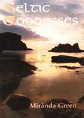

| |

Featured Book
Celtic Goddesses
Celtic Goddesses illustrates the role of women as religious leaders, priestesses (even druidesses) and as seers, appeasing and controlling supernatural powers.

Miranda Green, British Museum Press, 1995 ISBN: 0 7141 2312 9
Buy |
|
A Bibliography for the Stone and Bronze Ages is in preparation
Children's Books on the Celts:
- M. Corbishley, The Celts, Activity Book. BMP
- B. Cunliffe, Danebury, The story of an Iron Age Hillfort. Hants.C.C., Available from Andover Museum of the Iron Age
- R. Hull, The Celts in Britain. Wayland, 1997
- R. Kerven, Enchanted Kingdoms. BMP, 1997
- H. M. Martell, Celts - Britain Through the Ages Series. Evans, 1997
- E. Sibbett, Celtic Design Colouring Book. Dover, 1979
Iron Age / Celtic Europe and Britain for Adults and Students
This Bibliography is not comprehensive, but is intended to provide enough titles for teachers and students to study the
Museum collections in The Celtic Europe Gallery (Room 50). The study of the Iron Age is full of controversy and ideas in modern works do not
always receive universal agreement.
General Books
Prehistoric Europe:
- Cunliffe, B. (ed.), The Oxford Illustrated Prehistory of Europe
Prehistoric Britain:
- Darvill, T. Prehistoric Britain. Batsford, 1987
- Dyer, J., Ancient Britain. Guild, 1990
- Hunter, J. and Ralston, I. (Eds.), The Archeology of Britain. Routledge, 1999
- Megaw, J. and Simpson, D., Introduction to British Prehistory. Leicester, 1979
Iron Age:
- Cunliffe, B., The Celtic World. Constable, 1992 - reference for European material
- Cunliffe, B., Iron Age Communities in Britain. Routledge, 1991 - for teachers
- Cunliffe, B., Iron Age Britain. Batsford/English Heritage, 1995
- Green, M. (ed.), The Celtic World. Routledge, 1995
- Gwilt, A., and Haselgrove, C., Reconstructing Iron Age Societies. Oxbow Monograph, 1997
- Hill, J. D., 'The Iron Age in Britain and Ireland, c. 800BC - AD100, an overview'. Journal of World Prehistory 9, pp. 47-98
- James, S., Exploring the World of the Celts. Thames and Hudson 1993
- James, S., The Atlantic Celts - Ancient people or Invention. British Museum, 1999
- James, S. and Rigby, V., Britain and the Celtic Iron Age. British Museum, 1997
Regional and Site Studies in the British Isles
- Armit, I., Celtic Scotland. Batsford, 1997
- Cunliffe, B., Aspects of the Iron Age in Central Southern Britain. University of Oxford Committee for Archaeology, Monograph No. 2, 1984
- Cunliffe, B., Danebury. Batsford/English Heritage, 1993
- Hingley, R., Settlement and Sacrifice: The Later Prehistoric People of Scotland. Historic Scotland, 1998
- Raftery, B., Pagan Celtic Ireland. Thames and Hudson, 1994
- Reynolds, P., Iron Age Farm, The Butser Experiment. British Museum Press, 1979 -
Peter Reynolds has a wide range of other relevant materials for sale at Butser Farm
- Sharples, N., Maiden Castle. English Heritage, 1991
European Material (often including Britain)
- Collis, J., The European Iron Age. Batsford, 1984
- Cunliffe, B. Greeks, Romans and Barbarians. Guild, 1988
- Green, M., The Celtic World: Part IX: The Celts in Europe
Warfare
- Ritchie, W.F. & J.N.G., Celtic Warriors. Shire, 1990
- Dyer, J., Hillforts of England and Wales. Shire, 1992
- Green, M. The Celtic World: Part II: Warriors and Warfare
- Hogg, A. H. A., Hill-forts of Britain. Hart-Davis, MacGibbon, 1975
- Harding, A. and J. Chapman, Warfare in Prehistoric Europe. (to be published)
Cart Burials and Burials
Yorkshire and Cart Burials:
- Current Archaeology nos. 93, 95 & 111 on Wetwang and Kirkburn
- Stead, I. M., Iron Age Cemeteries in East Yorkshire. English Heritage, 1991
- Stead, I. M., The Arras Culture,Yorkshire Philosophical Society. 1979
Deal Warrior:
- Current Archaeology no. 125
- Parfitt, K., Iron Age Burial from Mill Hill, Deal. British Museum Press, 1995
Welwyn Garden City:
- I. Stead, 'A La Tene III Burial at Welwyn Garden City', Archaeologia 10, 1967, 1-62
Lindow Man:
- Brothwell, D., The Bog Man and the Archaeology of People. BMP, 1986
- Ross, A and Robins, D., The Life and Death of a Druid Prince. Touchstone, 1989
- Stead, I., Bourke, J. & Brothwell, D., Lindow Man, The Body in the Bog. British Museum Press, 1986
- Turner R. and Scaife, R. (eds.), Bog Bodies, New Discoveries and New Perspectives. British Museum Press, 1995
General:
- Green, M., The Celtic World: p. 489ff
Pottery, Crafts and Technology (see also Art below)
- Chapman, T. C., and Collis, J. R. (eds.), The Iron Age in Britain and Ireland: recent trends, Collis, Sheffield. 1996
- Cunliffe, B., Iron Age Communities in Britain. Routledge, 1991
- Elsdon, S., Later Prehistoric Pottery. Shire, 1989
- Fitzpatrick, A. P., and Morris, E. L., The Iron Age in Wessex. Association Francaise d'Etude de l'Age du Fer, 1994
- Green, M., The Celtic World: Part VI: Technology and Craftsmanship
- James and Rigby, Britain in the Celtic Iron Age
The Late Pre-Roman Iron Age and contacts with the Continent; Coins
- Cunliffe, B., Greeks, Romans and Barbarians. Guild, 1988
- Macready, S. and Thompson, F. H. (eds.), Cross-Channel Trade between Gaul and
Britain in the Pre-Roman Iron Age. Society of Antiquaries, 1984
Coins:
- Cunliffe, B. (ed.), Coinage and Society in Britain and Gaul. CBA Research Report 38, 1981
- de Jersey, P., Celtic Coinage in Britain. Shire 1996
- Mack, R., The Coinage of Ancient Britain. 3rd ed. 1975 - good maps (even if somewhat out of date)
- Nash, Coinage in the Celtic World. Seaby, 1987
- Van Arsdell, R., Celtic Coinage of Britain. Spink, 1989 - use with care; does enable a discussion of
the validity of surface trend maps
Art
- Green, M., The Celtic World: Part VII: The Art of the Celts
- Megaw, R & V., Early Celtic Art. Shire 1994
- Megaw, R & V., Celtic Art. Thames and Hudson, 1989
- Stead, I, Celtic Art. British Museum Press, 2nd Ed.,1996
- Stead, I, and Hughes, K., Early Celtic Designs. British Museum Press, 1997
Conservation and Scientific Research
See Lindow Man entries above - an excellent case study for both conservation and scientific research
Conservation:
Conservation display boards in Gallery 50, specific to the Iron Age material. English Heritage produce a wide series of
publications on Conservation
- Oddy, A., The British Museum Department of Conservation, History, Organisation, Role and Activities. 1997 -
available from the British Museum
- Oddy, A. The Art of the Conservator. British Museum Press, 1992 - a series of case-studies relating to numerous periods
Scientific Research:
- Baylel, J. (ed.), Science in Archaeology. English Heritage, 1999
- Bowman, S., Interpreting the Past - Radio-Carbon Dating. British Museum Press, 1994
- Chamberlain, A., Interpreting the Past - Human Remains. BMP, 1994
- Rackham, J., Interpreting the Past - Animal Bones. BMP, 1994
Religion and Mythology
Religion and Druids:
- Fitzpatrick, A. P., Who were the Druids. Weidenfeld and Nicolson, 1997
- Green, M. The Gods of the Celts. Allan Sutton, 1986
- Green, M., Exploring the World of the Druids. Thames and Hudson, 1997
- Green, M., Celtic Goddesses. British Museum Press, 1995
- Piggott, S., The Druids. Thames and Hudson, 1968
Mythology:
- Green, M., Celtic Myths. British Museum Press, 1993
|
|


Brass torc, from Lochar Moss, Dumfriesshire, Scotland
Iron Age, AD 50-200 |